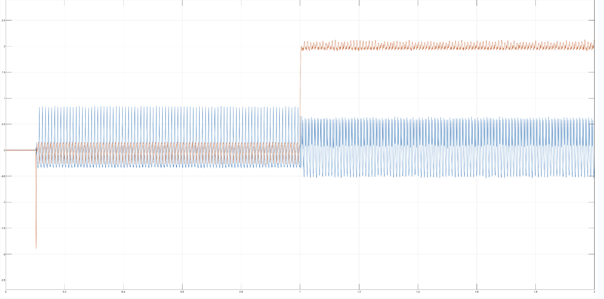

Simulink FOC Inverter
This Simulink model simulates the Bucher 3 phase inverter control system currently used on the monash motorsport racecar. The model uses 6 mosfets to output 3 phases of current to power the motor. These three phases are transformed to D and Q axis current using FOC topology, and also includes two PID controllers for the D and Q axis current.
The image above shows the D and Q axis current outputs of the motor with a speed request of a 100 (unitless) speed at a time of 0.1 seconds, and a current request of 2A at a time of 1 second.